공조냉동기계기사(구) (2011-03-20 기출문제)
1과목: 기계열역학
1. 27kPa의 압력차는 수은주로 어느 정도 높이가 되겠는가? (단, 수은의 밀도는 13590kg/m3 이다.)
- 약 158mm
- 약 203mm
- 약 265mm
- 약 557mm
(정답률: 59%)

2. 물 1kg이 압력 300kPa에서 증발할 때 증가한 체적이 0.8m3이었다면, 이때의 외부 일은? (단, 온도는 일정하다고 가정한다.)
- 140 kJ
- 240 kJ
- 320 kJ
- 420 kJ
(정답률: 70%)
3. 100℃ 와 50℃ 사이에서 작동되는 가역열기관의 최대 열효율은 약 얼마인가?
- 55.0%
- 16.7%
- 13.4%
- 8.3%
(정답률: 63%)
4. -3℃에서 열을 흡수하여 27℃에 방열하는 냉동기의 최대 성능계수는?
- 9.0
- 10.0
- 11.3
- 15.3
(정답률: 69%)
5. 냉매 R-134a를 사용하는 증기-압축 냉동사이클에서 냉매의 엔트로피가 감소하는 구간은 어디인가?
- 증발구간
- 압축구간
- 팽창구간
- 응축구간
(정답률: 65%)
6. 열역학 제 1법칙은 다음의 어떤 과정에서 성립하는가?
- 가역 과정에서만 성립한다.
- 비가역 과정에서만 성립한다.
- 가역 등은 과정에서만 성립한다.
- 가역이나 비가역 과정을 막론하고 성립한다.
(정답률: 64%)
7. 계(系)가 한 상태에서 다른 상태로 변할 때 엔트로피의 변화는?
- 증가하거나 불변이다.
- 항상 증가한다.
- 감소하거나 불변이다.
- 증가, 감소할 수도 있으며 불변일 경우도 있다.
(정답률: 42%)
8. 105Pa, 15℃ 공기가 n=1.3인 폴리트로픽 과정(Polytropic process)으로 변화하여 7×105 Pa로 압축되었다. 압축 후의 온도는 약 몇 ℃인가?
- 187℃
- 193℃
- 165℃
- 178℃
(정답률: 54%)
9. 온도 15℃, 압력 100kPa 상태의 체적이 일정한 용기안에 어떤 이상 기체 5 kg이 들어 있다. 이 기체가 50℃가 될 때까지 가열되었다. 이 과정동안의 엔트로피 변화는 약 얼마인가? (단, 이 기체의 정압비열과 정적비열은 1.001 kJ/kgㆍK, 0.7171 kJ/kgㆍK이다.)
- 0.411 kJ/K 증가
- 0.411 kJ/K 감소
- 0.575 kJ/K 증가
- 0.575 kJ/K 감소
(정답률: 45%)
10. 증기터빈으로 질량 유량 1 kg/s, 엔탈피 h1=3500 kJ/kg의 수증기가 들어온다. 중간 단에서 h2=3100 kJ/kg의 수증기가 추출되며 나머지는 계속 팽창하여 h3=2500 kJ/kg 상태로 출구에서 나온다면, 중간 단에서 추출되는 수증기의 질량 유량은? (단, 열손실은 없으며, 위치 에너지 및 운동 에너지의 변화가 없고, 총 터빈 출력은 900 kW이다.)
- 0.167 kg/s
- 0.323 kg/s
- 0.714 kg/s
- 0.886 kg/s
(정답률: 36%)
11. 이상적인 가역과정에서 열량 △Q가 전달될 때, 온도 T가 일정하면 엔트로피의 변화 △S 는?
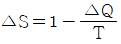
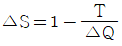
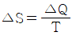
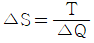
(정답률: 70%)
12. Carnot 냉동기로 25℃의 실내로부터 총 4 kW의 열을 온도 36℃인 주위로 방출하여야 한다. 최소동력은 얼마인가?
- 0.148 kW
- 1.44 kW
- 2.81 kW
- 4.00 kW
(정답률: 58%)
13. 500℃의 고온부와 50℃의 저온부 사이에서 작동하는 Carniot 사이클 열기관의 열효율은 얼마인가?
- 10%
- 42%
- 58%
- 90%
(정답률: 71%)
14. 8℃의 이상기체를 가역단열 압축하여 그 체적을 1/5로 하였을 때 기체의 온도는 몇 ℃로 되겠는가? (단, k=1.4 이다.)
- -125℃
- 294℃
- 222℃
- 262℃
(정답률: 55%)
15. 열병합발전시스템에 대한 설명으로 올바른 것은?
- 증기 동력 시스템에서 전기와 함께 공정용 또는 난방용 스팀을 생산하는 시스템이다.
- 증기 동력 사이클 상부에 고온에서 작동하는 수은 동력 사이클을 결합한 시스템이다.
- 가스 터빈에서 방출되는 폐열을 증기 동력 사이클의 열원으로 사용하는 시스템이다.
- 한 단의 재열 사이클과 여러 단의 재생사이클을 복합한 시스템이다.
(정답률: 56%)
16. P - V 선도에서 그림과 같은 사이클 변화를 갖는 이상기체가 한 사이클 동안 행한 일은?
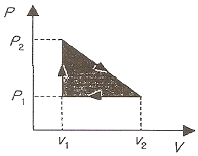
- P2(V2-V1)
- P1(V2-V1)
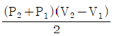
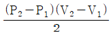
(정답률: 62%)
17. 수은주에 의해 측정된 대기압이 753mmHg일 때 진공도 90%의 절대압력은? (단, 수은의 밀도는 13600kg/m3, 중력가속도는 9.8m/s2 이다.)
- 약 200.08 kPa
- 약 190.08 kPa
- 약 100.04 kPa
- 약 10.04 kPa
(정답률: 55%)
18. 200m의 높이로부터 250kg의 물체가 땅으로 떨어질 경우 일을 열량으로 환산하면 약 몇 kJ인가? (단, 중력가속도는 9.8 m/s2 이다.)
- 79
- 117
- 203
- 490
(정답률: 61%)
19. 다음 중 Rankine 사이클에 대한 설명으로 틀린 것은?
- Carnot 사이클을 현실화한 사이클이다.
- 증기의 최고온도는 터빈 재료의 내열특성에 의하여 제한된다.
- 팽창일에 비하여 압축일이 적은 편이다.
- 터빈 출구서 건도가 낮을수록 유지관리에 유리하다.
(정답률: 54%)
20. 이상오토사이클의 열효율이 56.5% 이라면 압축비는 약 얼마인가? (단, 작동 유체의 비열비는 1.4로 일정하다.)
- 7.5
- 8.0
- 9.0
- 9.5
(정답률: 58%)
2과목: 냉동공학
21. 안전밸브의 점검사항이 아닌 것은?
- 분출 전개압력
- 가스분출 파이프의 지름
- 분출 정지압력
- 안전밸브의 누설
(정답률: 74%)
22. 어떤 냉동사이클을 압력-엔탈피 선도에 나타내었더니 그림과 같았다. 이 냉동 사이클에서의 냉매순환량이 200kg/h라면 냉동장치의 냉동능력은 약 몇 RT인가? (단, 1RT는 3320 kcal/h로 한다.)
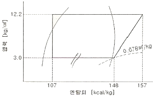
- 0.54
- 2.47
- 3.01
- 5.91
(정답률: 59%)
23. 어떤 R-22 냉동장치에서 냉매 1kg이 팽창변을 통과하여 5℃의 포화증기로 될 때까지 약 40 kcal의 열을 흡수 하였다. 같은 조건에서 냉동능력이 25000 kcal/h이라면 증발 냉매량은 얼마인가?
- 387 kg/h
- 450 kg/h
- 525 kg/h
- 625 kg/h
(정답률: 60%)
24. 냉각탑과 관계가 가장 먼 것은?
- 엘리미네이터
- 쿨링어프로치
- 쿨링레인지
- 스워얼
(정답률: 72%)
25. 다음 냉매 중 가연성이 있는 냉매는?
- R-717
- R-744
- R-718
- R-502
(정답률: 58%)
26. 냉동기에서 성적계수가 6.84 일 때 증발온도가 -15℃이다. 이 때 응축온도는 몇 ℃인가?
- 17.5
- 20.7
- 22.7
- 25.5
(정답률: 73%)
27. 암모니아 입형 저속 압축기에 많이 사용되는 포펫트 밸브에 관한 설명으로 틀린 것은?
- 구조가 튼튼하고 파손되는 일이 적다.
- 회전수가 높아지면 밸브의 관성 때문에 개폐가 자유롭지 못하다.
- 흡입밸브는 피스톤 상부 스프링으로 가볍게 지지되어 있다.
- 중량이 가벼워 밸브 개폐가 불확실하다.
(정답률: 71%)
28. 제빙능력은 원료수 온도 및 브라인 온도 등의 조건에 따라서 다르다. 다음 중 제빙에 필요한 냉동능력을 구하는데 필요한 항목으로 거리가 먼 것은?
- 온도 tw℃인 제빙용 원수를 0℃까지 냉각하는데 필요한 열량
- 물의 동결 잠열에 대한 열량(79.68kcal/kg)
- 제빙장지내의 발생열과 제빙용 원수의 수질 상태
- 브라인 온도 t1℃ 부근까지 얼음을 냉각하는데 필요한 열량
(정답률: 78%)
29. 그림과 같이 2단 압축 1단 팽창을 하는 냉동 사이클이 R-22 냉매로 작동되고 있을 때 성적 계수는 얼마인가? (단, 각 상태점의 엔탈피는 a : 95, c : 143, d : 154, e : 149, f : 158(kcal/kg) 이다.)
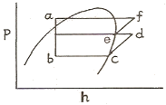
- 0.9
- 1.4
- 2.4
- 3.1
(정답률: 56%)
30. 온도식 자동팽창밸브의 감온통 설치방법으로 잘못된 것은?
- 증발기 출구 측 압축기로 흡입되는 곳에 설치할 것
- 흡입 관경이 20A 이하인 경우에는 관 상부에 설치할 것
- 외기의 영향을 받을 경우는 보온해 주거나 감온통 포켓을 설치할 것
- 압축기 흡입 관에 트랩이 있는 경우에는 트랩 부분에 부착할 것
(정답률: 67%)
31. H2O-LiBr흡수식 냉동기에 대한 설명 중 틀린 것은?
- 냉매는 물(H2O), 흡수제는 L1Br을 사용한다.
- 냉매 순환과정은 발생기 → 응축기 → 증발기 → 흡수기로 되어있다.
- 소형 보다는 대용량 공기조화용으로 많이 사용한다.
- 흡수제는 가능한 농도가 낮고, 흡수제는 고온이어야 한다.
(정답률: 63%)
32. 빙축열방식에 대한 설명 중 틀린 것은?
- 제빙을 위한 냉동기 운전은 냉수 취출을 위한 운전보다 증발온도가 낮기 때문에 성능계수(COP)가 높아 20~30% 소비동력이 감소한다.
- 냉매의 종류는 후레온 냉매를 직접 제빙부에 공급하는 직접팽창식과 냉동기에 냉각된 브라인을 제빙부에 공급하는 브라인 방식으로 나눈다.
- 제빙방식은 축열조 내측 또는 외측에 얼음을 생성시키는 정적제빙방식과 축열조 외부에서 제빙하고 그 얼음을 축열조에 옮겨 축열하는 동적제빙방식으로 나눈다.
- 빙축열조 축열용량=냉동기 능력 × 야간 축열운전시간이 된다. 여기에 제빙온도 등을 고려하여 기기를 선정한다.
(정답률: 60%)
33. 응축기에서 냉매가스의 열이 제거되는 방법은?
- 대류와 전도
- 증발과 복사
- 승화와 휘발
- 복사와 액화
(정답률: 69%)
34. 냉동장치의 제어기기에 관한 설명 중 올바르게 서술된 것은?(오류 신고가 접수된 문제입니다. 반드시 정답과 해설을 확인하시기 바랍니다.)
- 만액식 증발기에 저압측 프로트식 팽창밸브를 설치하여 증발온도를 거의 일정하게 제어할 수 있다.
- 냉장고용 냉동장치에서 겨울철에 응축온도가 낮아지면 팽창밸브 전후의 압력차가 커지기 때문에 팽창밸브가 작동하지 않는다.
- 일반적인 증발압력조정밸브는 증발기 입구측에 설치하여 냉매의 유량을 조절하고 증발기내 냉매의 압력을 일정하게 유지하는 조정밸브이다.
- R-22를 냉매로 하는 냉방기에서 증발기 출구의 과열도가 커지면 감온통 내의 가스압력이 높아져 온도식 자동팽창밸브가 닫힌다.
(정답률: 33%)
35. 용량조절장치가 있는 프레온냉동장치에서 무부하(unload) 운전시 냉동유 반송을 위한 압축기의 흡입관 배관방법은?
- 압축기를 증발기 밑에 설치한다.
- 2중 수직 상승관을 사용한다.
- 수평관에 트랩을 설치한다.
- 흡입관을 가능한 길게 배관한다.
(정답률: 58%)
36. 열펌프의 난방운전에 대한 설명 중 올바른 것은?
- 응축온도를 높게 유지할수록 냉매순환량이 감소한다.
- 응축온도를 높게 유지할수록 압축일량이 감소한다.
- 응축온도를 높게 유지할수록 냉매순환량이 증가한다.
- 응축온도를 높게 유지하여도 압축일량은 변하지 않는다.
(정답률: 52%)
37. 염화칼슘 브라인에 대한 설명 중 옳은 것은?
- 냉동 작용은 브라인의 장열을 이용하는 것이다.
- 염화나트륨 브라인보다 일반적으로 부식성이 크다.
- 공기중에 장시간 방치하여 두어도 금속에 대한 부식성은 없다.
- 가장 일반적인 브라인으로 제빙, 냉장 및 공업용으로 이용된다.
(정답률: 61%)
38. 액 분리기에 관한 내용 중 옳은 것은?
- 증발기 흡입 배관에 설치한다.
- 액압축을 방지하며 압축기를 보호한다.
- 냉각할 때 침입한 공기와 냉매를 혼합시킨다.
- 증발기에 공급되는 냉매액을 냉각시킨다.
(정답률: 84%)
39. 냉동장치의 응축기속에 공기(불응측 가스)가 들어 있을 때 일어나는 현상이라고 할 수 없는 것은?
- 고압측 압력이 보통보다 높다.
- 소비동력이 증가한다.
- 응축기에서의 전열이 불량해진다.
- 응축기의 온도가 낮아진다.
(정답률: 82%)
40. 2단 압축 냉동장치에 관한 내용이다. 옳지 않은 것은?
- 2단 압축에서 중간 압력이란 저단 압축기의 토출압력과 고단 압축기의 흡입압력을 말한다.
- 중간 냉각기는 고압축 흡입가스의 압력을 낮추어 압축비를 증가시킨다.
- 중간 냉각기는 저압축 토출가스의 온도를 내려 냉동장치의 성적계수를 높인다.
- 압축비가 6 이상이면 2단 압축을 채택한다.
(정답률: 58%)
3과목: 공기조화
41. 원심송풍기의 풍량제어 방법 중 소요동력이 가장 적은 방법은?
- 흡입구 베인 제어
- 스크롤 댐퍼 제어
- 토출측 댐퍼 제어
- 회전수 제어
(정답률: 79%)
42. 풍량 5000 kg/h의 공기(절대습도 0.002 kg/kg)를 온수분무로 절대습도 0.00375 kg/kg 까지 가습할 때의 분무 수량은 약 얼마인가? (단, 기습효율은 60%라 한다.)
- 5.25 kg/h
- 8.75 kg/h
- 14.58 kg/h
- 20.01 kg/h
(정답률: 53%)
43. 다음 중 강제 대류형 방열기에 속하는 것은?
- 주철제 방열기
- 콘벡터
- 베이스보드 히터
- 유닛 히터
(정답률: 49%)
44. 다음 공기조화 방식 중 전공기 방식이 아닌 것은?
- 변풍량 단일 덕트 방식
- 이중 덕트 방식
- 정풍량 단일 덕트 방식
- 팬 코일 유닛 방식(덕트병용)
(정답률: 79%)
45. 다음 중 사용되는 공기선도가 아닌 것은? (단, h:엔탈피, x:절대습도, t:온도, p:압력)
- h-x선도
- t-x선도
- t-h선도
- p-h선도
(정답률: 74%)
46. 강제순환식 온수난방에서 개방형 팽창탱크를 설치하려고 할 때, 적당한 온수의 온도는?
- 100℃ 미만
- 130℃ 미만
- 150℃ 미만
- 170℃ 미만
(정답률: 74%)
47. 다음 중 개별식 공기조화 방식이 아닌 것은 무엇인가?
- 각층 유닛방식
- 룸쿨러 방식
- 패키지 방식
- 멀티유닛형 룸쿨러 방식
(정답률: 67%)
48. 주로 덕트의 분기부에 설치하여 분기덕트 내의 풍량조절용으로 사용되는 댐퍼는?
- 방화댐퍼
- 다익댐퍼
- 방연댐퍼
- 스프릿댐퍼
(정답률: 78%)
49. 어떤 장치에 비엔탈피 10 kcal/kg인 공기가 매시간 500kg씩 들어와서 비엔탈피 12kcal/kg인 공기로 변화 된다고 하면 이 장치에서 공급되는 열량은 몇 kcal/h 인가? (단, 장치에서의 가습은 없는 것으로 한다.)
- 1000
- 1500
- 2000
- 2500
(정답률: 67%)
50. 다음 중에서 온수보일러의 부속품으로는 사용되지 않는 것은?
- 순환펌프
- 릴리프밸브
- 수면계
- 팽창탱크
(정답률: 54%)
51. 다음 중 일반적으로 난방부하계산에 포함시키지 않는 것은?
- 벽체의 열손실
- 유리면의 열손실
- 극간풍에 의한 열손실
- 조명기구의 발열
(정답률: 70%)
52. 주철제 보일러의 단점에 해당하는 것은?
- 인장 및 충격에 약하다.
- 복잡한 구조는 제작이 불가능하다.
- 내식 및 내열성이 나쁘다.
- 파열시 고압으로 인한 피해가 크다.
(정답률: 67%)
53. 중앙공조기(AHU)에서 냉각코일의 용량 결정에 영향을 주지 않는 것은?
- 덕트 부하
- 외기 부하
- 냉수 배관 부하
- 재열 부하
(정답률: 58%)
54. 한장의 보통 유리를 통해서 들어오는 취득열량을 q=IGR xks × Ag + IGC × Ag라 할 때 ks 를 무엇이라 하는가? (단, IGR : 일사투과량, Ag : 유리의 면적, IGC : 창면적당의 내표면으로부터 대류에 의하여 침입하는 열량)
- 유리의 열전도계수
- 차폐계수
- 단위시간에 단위면적을 통해 투과하는 열량
- 유리의 반사율
(정답률: 78%)
55. 공장의 저속 덕트방식에서 주 덕트내의 권장풍속으로 가장 적당한 것은?
- 23~27 m/s
- 17~22 m/s
- 13~16 m/s
- 6~9 m/s
(정답률: 78%)
56. 간이계산법에 의한 건평 150m2에 소요되는 보일러의 급탕부하는 얼마인가? (단, 건물의 열손실은 90 kcal/m2h, 급탕량은 100 kg/h, 급수 및 급탕온도는 각각 30℃, 70℃이다.)
- 3500 kcal/h
- 4000 kcal/h
- 13500 kcal/h
- 17500 kcal/h
(정답률: 42%)
57. 단일덕트 정풍량 방식의 장점 중에서 옳지 않은 것은?
- 각 실의 실온을 개별적으로 제어할 수가 있다.
- 공조기가 기계실에 있으므로 운전, 보수가 용이하고, 진동, 소음의 전달 염려가 적다.
- 외기의 도입이 용이하며 환기팬 등을 이용하면 외기냉방이 가능하고 전열교환기의 설치도 가능하다.
- 존의 수가 적을 때는 설비비가 다른 방식에 비해서 적게 든다.
(정답률: 77%)
58. 다음 증기난방의 분류법에 해당되지 않는 것은?
- 응축수 환수법
- 증기 공급법
- 증기 압력
- 지역냉난방법
(정답률: 60%)
59. 다음 중 공기여과기(air filter) 효율 측정법이 아닌 것은 어느 것인가?
- 중량법
- 비색법(변색도법)
- 계수법(DOP법)
- HEPA필터법
(정답률: 80%)
60. 실내 난방을 온풍기로 하고 있다. 이 때 실내 현열량 5600 kcal/h, 송풍공기온도 30℃, 외기온도 -10℃, 실내온도 20℃일 때, 온풍기의 풍량(m3/min)은 약 얼마인가?
- 32.2m3/min
- 38.9m3/min
- 66.6m3/min
- 79.8m3/min
(정답률: 45%)
4과목: 전기제어공학
61. 다음 중 직류 전동기의 규약효율을 나타내는 식으로 가장 알맞은 것은?
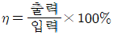
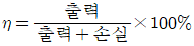
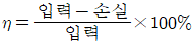
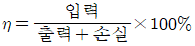
(정답률: 56%)
62. 제동계수 중 최대 초과량이 가장 큰 것은?
- δ=0.5
- δ=1
- δ=2
- δ=3
(정답률: 65%)
63. υ=141 sin(377t-π/6)인 파형의 주파수는 약 몇 [Hz]인가?
- 50
- 60
- 100
- 377
(정답률: 54%)
64. 2차계 시스템의 응답형태를 결정하는 것은?
- 히스테리시스
- 정밀도
- 분해도
- 제동계수
(정답률: 57%)
65. 제어동작에 대한 설명 중 옳지 않은 것은?
- 2위치동작 : ON-OFF 동작이라고도 하며, 편차의 정부(+,-)에 따라 조작부를 전폐 또는 전개하는 것이다.
- 비례동작 : 편차의 제곱에 비례한 조작신호를 낸다.
- 적분동작 : 편차의 적분치에 비례한 조작신호를 낸다.
- 미분동작 : 조작신호가 편차의 증가속도에 비례하는 동작을 한다.
(정답률: 70%)
66. 그림과 같은 다이오드 브리지 정류회로가 있다. 교류전원 υ가 양일 때와 음일 때의 전류 방향을 바로 적은 것은? (단, 화살표 방향을 양으로 한다.)
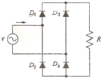
- υ＞0: υ→D1→R→D2→υ
υ＜0:υ→D2→R→D1→υ - υ＞0: υ→D1→R→D2→υ
υ＜0:υ→D4→R→D1→υ - υ＞0: υ→D1→R→D4→υ
υ＜0:υ→D3→R→D2→υ - υ＞0: υ→D1→R→D2→υ
υ＜0:υ→D4→R→D3→υ
(정답률: 54%)
67. 그림에서 스위치 S의 개폐에 관계없이 전전류 I가 항상 30A 라면 저항 r3와 r4의 값은 몇 [Ω]인가?
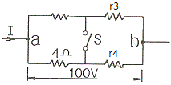
- r3=1, r4=3
- r3=2, r4=1
- r3=3, r4=2
- r3=4, r4=4
(정답률: 48%)
68. 도체에 전하를 주었을 경우에 틀린 것은?
- 전하는 도체 외측의 표면에만 분포한다.
- 전하는 도체 내부에만 존재한다.
- 도체 표면의 곡률 반경이 작은 곳에 전하가 많이 모인다.
- 전기력선은 정(+)전하에서 시작하여 부전하(-)에서 끝난다.
(정답률: 62%)
69. 그림과 같은 피드백 제어시스템에서 단위 계단 함수를 입력으로 할 때 정상상태 오차가 0.01 이 되도록 하는 a의 값은?
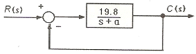
- 0.1
- 0.2
- 0.3
- 0.4
(정답률: 49%)
70. 불연속제어에 속하는 것은?
- 비율제어
- 비례제어
- 미분제어
- ON-OFF 제어
(정답률: 72%)
71. 변압기 절연 내력시험이 아닌 것은?
- 가압 시험
- 유도 시험
- 충격 시험
- 절연저항 시험
(정답률: 51%)
72. 궤한제어계에 속하지 않는 신호로서 외부에서 제어량이 그 값에 맞도록 제어계에 주어지는 신호를 무엇이라 하는가?
- 동작 신호
- 기준 입력
- 목표값
- 궤환 신호
(정답률: 44%)
73. 그림에서 출력 Y는?
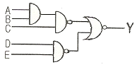
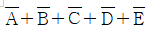
- A+B+C+D+E
- ABCDE
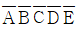
(정답률: 54%)
74. 그림과 같은 블록선도를 등가 변환한 것은?
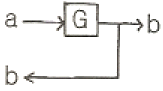
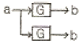
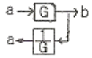
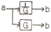
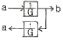
(정답률: 59%)
75. 그림과 같은 브리지 정류회로에 어느 점에 교류입력을 연결하여야 하는가?
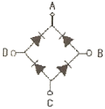
- A-B점
- A-C점
- B-C점
- B-D점
(정답률: 50%)
76. 논리식 A+AB를 간단히 하면?
- 0
- 1
- A
- B
(정답률: 71%)
77. 온도를 임피던스로 변환시키는 요소는?
- 측온 저항
- 광전지
- 광전 다이오드
- 전자석
(정답률: 66%)
78. 시퀀스제어의 장점이 아닌 것은?
- 구성하기 쉽다.
- 시스템의 구성비가 낮다.
- 원하는 출력을 얻기 위해 보정이 필요 없다.
- 유지 밎 보수가 간단하다.
(정답률: 68%)
79. 순시전압 e=Em sin(ωt+θ)의 파형은?
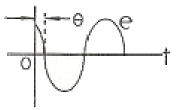
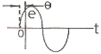
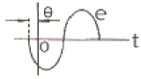
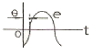
(정답률: 65%)
80. 다음 중 옴의 법칙에 대한 설명으로 옳지 않은 것은?
- 저항에 전류가 흐를 때 전압, 전류, 저항의 관계를 설명해 준다.
- 옴의 법칙은 저항으로 전류의 크기를 조절 할 수 있음을 보여준다.
- 옴의 법칙은 저항에 의한 전압강하를 설명해 준다.
- 옴의 법칙을 이용하여 임피던스에 의한 전압강하는 설명할 수 없다.
(정답률: 66%)
5과목: 배관일반
81. 동관 이음의 종류가 아닌 것은?
- 납땜 이음
- 용접 이음
- 나사 이음
- 압축 이음
(정답률: 55%)
82. 도시가스 배관을 매설하는 경우이다. 틀린 것은?
- 배관을 철도부지에 매설하는 경우에는 배관의 외면으로부터 궤도 중심까지 거리는 4m이상 일 것
- 배관을 철도부지에 매설하는 경우에는 배관의 외면으로부터 철도부지 경계까지 거리는 0.6m 이상일 것
- 배관을 철도부지에 매설하는 경우에는 지표면으로부터 배관의 외면까지의 깊이는 1.2m이상으로 할 것
- 배관을 산에 매설하는 경우에는 지표면으로부터 배관의 외면까지의 깊이는 1m이상으로 할 것
(정답률: 56%)
83. 다음 중 폴리에틸렌관의 접합법이 아닌 것은?
- 나사 접합
- 인서트 접합
- 소켓 접합
- 용착 접합
(정답률: 45%)
84. 온수난방의 설비의 온수배관 시공법에 관한 설명 중 잘못된 것은?
- 수평배관에서 관의 지름을 바꿀 때에는 편심리듀서를 사용한다.
- 배관재료는 내열성을 고려한다.
- 공기가 고일 염려가 있는 곳에는 공기배출을 고려한다.
- 팽창관에는 슬루스 밸브를 설치한다.
(정답률: 74%)
85. 배관재질의 선정 시 기본적으로 고려할 사항과 거리가 먼 것은?
- 사용온도
- 사용유량
- 화학적, 물리적 성질
- 사용압력
(정답률: 64%)
86. 급탕의 온도는 사용온도에 따라 각각 다르나 계산을 위하여 기준온도로 환산하여 급탕의 양을 표시하고 있다. 이때 환산의 온도로 맞는 것은?
- 40℃
- 50℃
- 60℃
- 70℃
(정답률: 66%)
87. 다음은 관의 부식 방지에 관한 것이다. 틀린 것은?
- 전기 절연을 시킨다.
- 아연도금을 한다.
- 열처리를 한다.
- 습기의 접촉을 없게 한다.
(정답률: 67%)
88. 냉동 장치의 배관설치에 관한 내용으로 틀린 것은?
- 토출가스의 합류 부분 배관은 T 이음으로 한다.
- 압축기와 응축기의 수평배관은 하향 구배로 한다.
- 토출가스 배관에는 역류방지 밸브를 설치한다.
- 토출관의 입상이 10 m이상일 경우에는 10 m마다 중간 트랩을 설치한다.
(정답률: 63%)
89. 각개 통기관의 최소관경으로 옳은 것은?
- 30 mm
- 40 mm
- 50 mm
- 60 mm
(정답률: 65%)
90. 다음 중에서 보온피복을 하지 않아도 되는 곳은?
- 급탕용 배관
- 급수용 배관
- 증기용 배관
- 통기용 배관
(정답률: 74%)
91. 증기보일러 배관에서 환수관의 일부가 파손된 경우에 보일러 수가 유출해서 안전수위 이하가 되어 보일러 수가 빈 상태로 되는 것을 방지하기 위한 접속법은?
- 하트 포드 접속법
- 리프트 접속법
- 스위블 접속법
- 슬리브 접속법
(정답률: 75%)
92. 냉동설비배관에서 액분리기와 압축기 사이의 냉매배관을 할 때 구배로 맞는 것은?
- 1/100정도의 압축기측으로 상향 구배로 한다.
- 1/100정도의 압축기측으로 하향 구배로 한다.
- 1/200정도의 압축기측으로 상향 구배로 한다.
- 1/200정도의 압축기측으로 하향 구배로 한다.
(정답률: 53%)
93. 지역난방의 옥외배관에서 고온수배관은 얼마정도의 구배를 주는가?
- 1/250 이상
- 1/350 이상
- 1/450 이상
- 1/500 이상
(정답률: 70%)
94. 급수배관의 수격현상 방지방법에 관한 설명 중 잘못된 것은?
- 밸브를 천천히 열고 닫는다.
- 공기실을 설치한다.
- 관내 유속을 빠르게 한다.
- 굴곡배관을 억제하고 가능한 직선배관으로 한다.
(정답률: 73%)
95. 공조 설비에서 증기코일의 동결방지 대책으로 잘못 설명한 것은?
- 외기와 실내 환기가 혼합되지 않도록 차단한다.
- 외기 댐퍼와 송풍기를 인터록(interlock)시킨다.
- 야간의 운전정지 중에도 순환 펌프를 운전한다.
- 증기코일 내에 응축수가 고이지 않도록 한다.
(정답률: 52%)
96. 우리나라 상수도 원수의 기준에서 수질검사를 위한 원수채취 기준으로 맞는 것은?
- 상온의 일반 기상상태 하에서 5일 이상의 간격으로 2회 채취한 물
- 상온의 일반 기상상태 하에서 5일 이상의 간격으로 3회 채취한 물
- 상온의 일반 기상상태 하에서 7일 이상의 간격으로 2회 채취한 물
- 상온의 일반 기상상태 하에서 7일 이상의 간격으로 3회 채취한 물
(정답률: 48%)
97. 다음 중 앵글밸브에 대한 설명이 잘못된 것은?
- 앵글밸브는 게이트밸브의 일종이다.
- 출구쪽에 드레인이 허용되지 않는 경우에 사용된다.
- 유체의 입구와 출구의 각이 90°로 되어있다.
- 방열기용 밸브로 많이 사용된다.
(정답률: 43%)
98. 보일러 부하가 300000 kcal/h이고, 효율이 60%일 때 오일버너의 연료 소비량은 약 얼마인가? (단, 연료 발열량은 9000 kcal/kg 이다.)
- 46.5 kcal/h
- 55.5 kcal/h
- 61.5 kcal/h
- 66.5 kcal/h
(정답률: 58%)
99. 배수설비의 종류에서 요리실, 욕조, 세척 싱크와 세면기 등에서 배출되는 물을 배수하는 설비의 명칭으로 맞는 것은?
- 오수 설비
- 잡배수 설비
- 빗물배수 설비
- 특수배수 설비
(정답률: 73%)
100. 온수난방 배관에서 온수의 팽창, 수축량은 다음 식에 의하여 구한다. 설명이 잘못된 것은?
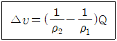
- △υ : 수온 변화에 의한 팽창, 수축량 [m3]
- ρ2 : 가열 후의 물의 밀도 [kg/m3]
- ρ1 : 가열 전의 물의 밀도 [kg/m3]
- Q : 팽창탱크 내의 물의 총량 [kg]
(정답률: 65%)
높이 = 압력차 / (수은의 밀도 × 중력가속도)
중력가속도는 대략 9.8m/s2 이므로, 계산하면:
높이 = 27kPa / (13590kg/m3 × 9.8m/s2) ≈ 0.0203m
즉, 약 20.3cm 이다. 이 값을 밀리미터로 변환하면 약 203mm 이므로, 정답은 "약 203mm" 이다.